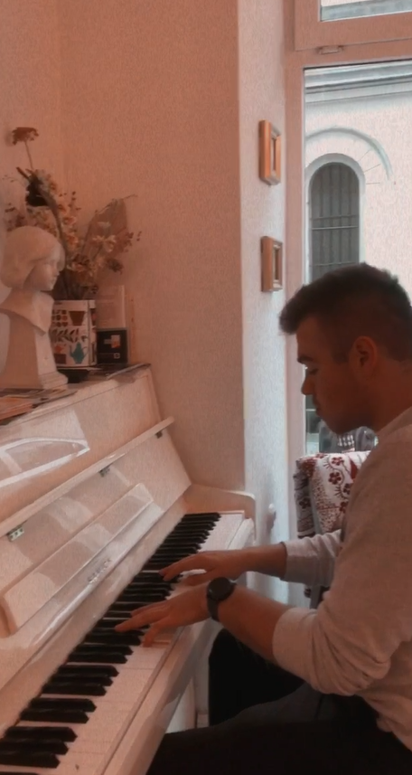
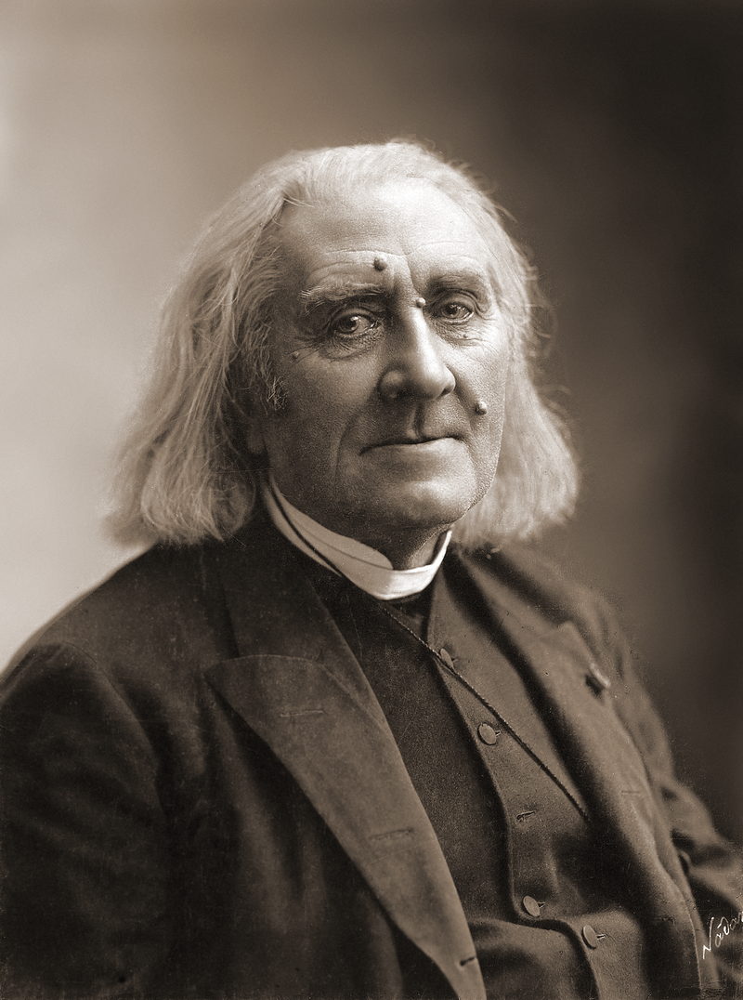

Słowem wstępu
Na tej stronie znajdziesz informacje o trzech, moich ulubionych, kompozytorach. Fakt tego, iż samemu głównie gram na pianinie sprawił, że są to pianiści. Co nie umniejsza ich dokonaniom, ani także nie implikuje tego, że nie tworzyli bardzo złożonych i pięknych kompozycji również z innymi insturmentami.
Czego się dowiesz?
Postaram się przekazać trochę krótkiej wiedzy o ich życiu oraz co najważnieszje, podać kilka przykładów ich twórczości, nie będę w stanie omówić wszystkiego, ale przedstawię kilka, moim zdaniem, najurokliwszych. Dodatkowo zaprezentowane zostaną niektóre mniej znane inforamcje, o których nie dowiemy się wszędzie, a zdecydowanie mogą poprawić odbiór słuchanego utworu.
Może znajdziesz tutaj coś co Cię zaciekawi.
Zapraszam!!!

Inforamcje wstępne:
Fryderyk Franciszek Chopin (ur. 22 lutego lub 1 marca 1810 w Żelazowej Woli, zm. 17 października 1849 w Paryżu) - polski kompozytor i pianista. Od października 1831 roku mieszkał we Francji.
Jest uważany za jednego z najwybitniejszych kompozytorów romantycznych, a także za jednego z najważniejszych polskich kompozytorów w historii. Był jednym z najsłynniejszych pianistów swoich czasów, często nazywany poetą fortepianu. Elementami charakterystycznymi dla utworów Chopina są pogłębiona ekspresja oraz czerpanie z wzorców stylistycznych polskiej muzyki ludowej.
Utwory Chopina:
Jednymi z najpopularniejszych utworów Chopina są zdecyodwanie "Nocturne Op. 9 no 2",
czy "Etudia c-moll Op. 10 Nr 12", inaczej zwana "Rewolucyjną".
Z moich ulubionych utowrów, zdecydo5wanie polecam Balladę g-moll Op.23. Utwór ten występuje między innymi w filmie "Pianista".
Trochę o Etiudach:
Etiuda w ówczesnej muzyce była utworem, który miał być typowo szkoleniowy i rozwijać umiejętności uczącego się, jednakże Chopin w swoich Etudiach zrobił coś niezwykłego. Udało mu się połączyć pięknie brzmiące utwory i wartości szkoleniowe dla grającego.

Inforamcje wstępne:
Ferenc Liszt (['fɛrɛnt͡s 'list], niem. Franz Liszt; ur. 22 października 1811 w Raiding, zm. 31 lipca 1886 w Bayreuth) - węgierski kompozytor i pianista, jedna z najwybitniejszych postaci romantyzmu w muzyce. Zajmował się też filozofią, pisaniem esejów i artykułów, działał na arenie politycznej.
Utwory Liszta:
Polecić mogę zdecydowanie Rapsodie węgierską nr. 2 (Hungarian Rhapsody No. 2), jest to dość dluga kompozycja, jak utwór na jeden instrument. Trwa on aż dwanaście minut, ale każda minuta w tym utworze dostarcza całkowicie innych i bogatych wrażeń.
Z innych utworów wartych polecenia warto nadmienić Libestraum No. 3, występuje tam bardzo ciekawy motyw, który wykorzystuje fakt, że akordy jak i ogólnie dźwięki można zagrać trochę w inny sposób (np. zmieniając oktawę niektórych z nich). W taki sposób Liszt zmieniał jeden powtarzający się ciągle motyw, aby ukazać to jak zmienia się miłość na przestrzeni czasu.
Lisztomania
Za życia Liszt był pierwszym tak popularnym i rozchwytywanym celebrytą, otoczonym tłumem fanów i fanek. Stał się prekursorem zachowania dla gwiazd sceny muzycznej XX i XXI wieku. Pierwszy raz szał ogarnął słuchaczy podczas jego koncertu w Berlinie w 1841 r. Termin lisztomania został później użyty przez Heinricha Heinego w felietonie z 25 kwietnia 1844 r. omawiającym paryski sezon koncertowy. Lisztomania charakteryzowała się intensywną histerią w czasach nieznających jeszcze takiej ekscytacji związanej z wydarzeniem muzycznym. Młode kobiety podczas jego koncertów krzyczały, szlochały i omdlewały, czatowały na elementy jego garderoby, zbierały urwane struny od fortepianu, fusy z wypitej przez niego kawy.

Inforamcje wstępne:
Siergiej Wasiljewicz Rachmaninow (ros. Сергей Васильевич Рахманинов; ur. 20 marca/1 kwietnia 1873 w Siemionowie koło Nowogrodu Wielkiego, zm. 28 marca 1943 w Beverly Hills) - rosyjski kompozytor, pianista i dyrygent.
Studiował w konserwatoriach w Petersburgu i Moskwie. W 1917 wyemigrował do Stanów Zjednoczonych, często mieszkał także w Paryżu. Jego muzyka nawiązuje do twórczości Piotra Czajkowskiego i Modesta Musorgskiego.
Utwory Rachmaninoff'a
Rachmaninoff byl pianistą co przejawia się w jego stylu komponowania. Jednak nie pisał on tylko utworów na pianino, może się on także poszczycić kilkoma symfoniami.
Jednym z najpopularniejszych kompozycji tego kompozytora jest koncert na pianino no. 2, jednakże osobiście zdecydowanie polecam Preludium Cis-moll Op. 3 No. 2.
Pewna legenda powiązana z Preludium Cis-moll jest taka, że podobno autor mial przedstawić tutaj swój sen. Miał się on znajdować na pogrzebie,w muzyce jest to przedtawione jako spokojna melodia z poczuciem grozy. W pewnym momencie muzyka znacząco przyspiesza, miała być to oznaka biegu. W pewnym momencie Rachmaninoff dobiega do trumny, otwiera ją i znajduję w środku sam Siebie, oznacza to także motyw kulminacyjny utworu, przejawiąjący grozę, ale także silne emocje.
Wyjazd z Rosji:
Rachmaninoff był zmuszony uciec z Rosji podczas rewolucji październikowej. Na podstawie innego rosyjskiego kompoztyora Shostkaovicha, można stwierdzić, że była to dobra decyzja, ponieważ jemu władza narzucała to co ma komponować. Rachmaninoff po wyjeździe osiedlił się w Szwajcarii, jednak cały czas tęsknił za własną ojczyzną.